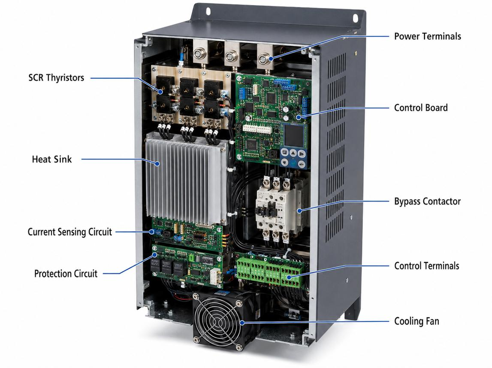

04_Soft_Starter - Soft starter: Ramp start without a drive
1. Purpose of a soft starter
A soft starter is an electronic motor-starting device that gradually increases the voltage applied to an AC motor during startup. Many soft starters can also provide controlled stopping.
Its primary purpose is to reduce starting current and mechanical shock compared with direct-on-line (DOL) starting.
Unlike a variable-frequency drive (VFD), a conventional soft starter does not continuously control motor speed by varying the supply frequency. It is mainly used to control the starting and stopping process.
Typical applications include pumps, fans, compressors, and conveyors where smoother starting is beneficial.
Core principle
- DOL starter: Applies full supply voltage immediately.
- Star-delta starter: Starts with the motor windings connected in star, then changes to delta.
- Soft starter: Electronically controls the voltage supplied to the motor during starting.
- VFD: Controls output frequency and voltage, enabling variable-speed operation.
The phrase "without a drive" in this study topic means without a VFD. A soft starter is itself a power-electronic motor controller, just one designed for a different job.
2. Soft starter system architecture

A typical soft starter system consists of:
- Three-phase input supply.
- Semiconductor switching devices, commonly thyristors or SCRs.
- Control electronics and firing circuitry.
- Current and voltage sensing, depending on the model.
- Motor output terminals.
- Configuration interface and status indicators.
- Optional bypass contactor.
- Protection, interlocks, and control wiring.
Conceptual power circuit
THREE-PHASE SUPPLY
L1 L2 L3
| | |
[Circuit Protection]
| | |
[Soft Starter]
[SCR / Thyristor]
| | |
U V W
[Induction Motor]
|
Machine Load
The exact circuit may include additional components such as a bypass contactor, isolation device, line contactor, or external overload protection.
3. How a soft starter works
3.1 Starting principle
A conventional AC soft starter uses semiconductor devices to control the effective voltage applied to the motor.
A simplified starting sequence is:
- The start command is received.
- The soft starter begins applying controlled voltage.
- The motor develops torque and begins accelerating.
- The starter increases the applied voltage according to its control method and configured settings.
- The motor approaches its operating speed.
- The starter reaches its configured full-voltage or run condition.
- Where fitted, a bypass contactor may close to carry the motor current and reduce semiconductor losses.
The motor's acceleration depends on the load, the available torque, the supply, and the starter settings. A programmed ramp does not guarantee a perfectly linear speed ramp.
3.2 Thyristor or SCR operation
A thyristor, also called a silicon-controlled rectifier (SCR), is a semiconductor switching device.
By controlling when the SCR conducts during each AC half-cycle, the soft starter adjusts the effective voltage supplied to the motor.
Many conventional soft starters control two or three phases, depending on their design. Three-phase control provides different performance and current characteristics from two-phase control, so the manufacturer's circuit and specifications matter.
Unlike a VFD, a conventional soft starter does not synthesize a continuously variable-frequency output.
4. Voltage ramp and current limit
Two common soft-starter starting strategies are voltage ramp and current limit.
4.1 Voltage ramp
The starter increases the commanded motor voltage over a configured period.
Typical parameters include:
- Initial voltage.
- Ramp-up time.
- Current limit, if supported.
- Kick-start or boost settings, if supported.
- Start timeout and protective limits.
Initial voltage is the starting voltage level used by the configured control method. If it is too low, the motor may fail to move or may accelerate very slowly.
Ramp-up time is the configured duration for increasing the voltage command. It is not necessarily the time the motor takes to reach full speed.
For example, a 10-second voltage ramp does not guarantee that a loaded conveyor reaches its final speed in exactly 10 seconds.
4.2 Current limit
A current-limited start attempts to keep motor current within a configured limit while the motor accelerates.
The starter adjusts its output to control the current according to its algorithm and limits.
The current limit must be high enough to produce sufficient accelerating torque. Setting it too low can cause prolonged acceleration, motor heating, or a start timeout.
4.3 Voltage ramp versus current limit
| Characteristic | Voltage ramp | Current limit |
|---|---|---|
| Primary control objective | Follow a voltage command over time | Limit starting current |
| Main settings | Initial voltage and ramp time | Current limit and time limits |
| Starting current | Depends on load and voltage profile | Controlled toward the configured limit |
| Acceleration | Depends on motor torque and load | Depends on available torque within the current limit |
| Typical use | Smoother starting of suitable loads | Applications with a defined starting-current constraint |
The exact functions and interactions vary by soft-starter model. Some devices combine ramp control, current limiting, and adaptive acceleration algorithms.
5. Starting torque and motor acceleration
For a conventional induction motor operating under comparable conditions, torque is approximately proportional to the square of applied voltage.
If the effective motor voltage is reduced to 70% of its full-voltage value, a simplified torque estimate is:
That corresponds to approximately 49% of the comparable full-voltage torque under the assumptions of this simplified relationship.
Actual torque depends on the motor, slip, waveform, control method, and operating point.
This relationship explains a major soft-starter trade-off: reducing voltage can reduce current, but it can also reduce the torque available to accelerate the load.
The motor accelerates only when the developed motor torque exceeds the opposing load torque and losses by enough to produce the required acceleration.
If the motor is heavily loaded, a soft starter may reach its current limit without achieving adequate acceleration.
6. Soft starter versus DOL and star-delta
| Characteristic | DOL | Star-delta | Soft starter |
|---|---|---|---|
| Starting method | Full supply voltage | Reduced winding voltage in star | Electronic voltage control |
| Starting-current reduction | No deliberate reduction | Reduced compared with DOL under suitable conditions | Controlled according to device settings |
| Starting torque | Full-voltage starting torque | Approximately one-third of DOL under idealized comparable conditions | Depends on applied voltage and control strategy |
| Transition event | None | Star-to-delta changeover | No star-to-delta transition |
| Acceleration control | Limited | Limited by the starting and changeover arrangement | Configurable voltage ramp or current limit |
| Controlled stopping | Requires suitable additional equipment or system | Not inherently provided | Often available |
| Variable running speed | No | No | Generally no |
| Power-electronic complexity | Low | Moderate | Moderate |
A soft starter usually offers smoother starting than DOL and avoids the star-to-delta switching event. It does not automatically provide better acceleration under every load condition. The motor still needs sufficient torque to accelerate.
7. Soft starter versus VFD
This distinction is essential in industrial maintenance.
| Characteristic | Soft starter | VFD |
|---|---|---|
| Main purpose | Controlled starting and often stopping | Speed, torque, and motion-related control according to drive capability |
| Output frequency | Normally follows supply frequency | Adjustable |
| Continuous variable-speed operation | Generally not intended for this | Supported |
| Starting-current management | Through voltage control or current limiting | Through frequency/voltage control and drive current limits |
| Motor speed during normal operation | Determined mainly by supply frequency, motor poles, slip, and load | Controlled through output frequency and selected control mode |
| Semiconductor switching | Commonly SCR/thyristor phase control | Rectifier, DC link, and inverter switching in typical AC VFDs |
| Energy-saving potential | Limited for normal full-speed operation | Can reduce energy use in suitable variable-speed applications, particularly many pump and fan systems |
| Typical application | Reduce starting stress | Regulate process speed and support more advanced motor control |
A soft starter is not a substitute for a VFD when the process requires continuous speed regulation.
8. Bypass contactor
Many soft starters include or support a bypass contactor.
Purpose
During startup, the motor current passes through the soft starter's semiconductor power stage. After the motor reaches the configured running condition, the bypass contactor closes in suitable designs, allowing motor current to flow through the bypass path.
Benefits can include:
- Lower semiconductor conduction losses during normal running.
- Reduced heat generated inside the soft starter.
- Improved suitability for some continuous-running applications.
The bypass contactor does not mean the soft starter has become a VFD or that it continues regulating motor speed. Depending on the design, it may be opened again when a controlled stop is required.
Not every soft starter uses an external bypass contactor. Some have integrated bypass arrangements; others require different configurations.
9. Common soft-starter parameters
Parameter names and available functions vary by manufacturer and model.
| Parameter | Purpose | If incorrectly configured |
|---|---|---|
| Motor rated current | Establishes the motor's current reference for relevant functions | Protection and control may be inappropriate |
| Initial voltage | Sets the starting voltage command | Too low may prevent movement; too high may increase starting stress |
| Ramp-up time | Sets the commanded voltage-ramp duration | Too short may cause harsh starting; too long may extend heating |
| Current limit | Restricts starting current when supported | Too low may prevent acceleration |
| Kick-start or boost | Provides an initial starting boost where supported | Excessive use may increase mechanical or electrical stress |
| Ramp-down time | Sets the commanded stopping ramp | Too long or unsuitable settings may cause prolonged stopping |
| Start timeout | Limits the allowed starting duration | May trip if acceleration takes longer than permitted |
| Thermal or overload parameters | Provide configured motor-overload protection functions | Incorrect settings can compromise protection |
| Bypass configuration | Controls or supervises bypass operation where supported | Incorrect configuration can cause faults or abnormal operation |
Configuration rule
Use the motor nameplate, load requirements, soft-starter manual, protection-coordination requirements, and commissioning results to establish settings.
Do not copy parameter values from another machine simply because both motors have the same kW rating. Different loads can require very different starting torque and acceleration.
10. Applications and selection
| Application | Potential benefit of a soft starter | Main consideration |
|---|---|---|
| Centrifugal pump | Reduces starting stress and can support controlled stopping | Check hydraulic behavior and whether stopping control meets the process need |
| Fan or blower | Reduces starting current and mechanical shock | High-inertia fans may need sufficient acceleration time and torque |
| Conveyor | Reduces abrupt starting forces | Loaded conveyors may require high starting torque |
| Compressor | Can reduce starting stress where the compressor design permits | Check unloading arrangements, starting torque and manufacturer requirements |
| General fixed-speed motor | Smoother start | Compare soft-starter cost and performance with DOL or star-delta |
When a soft starter may be unsuitable
- The application requires continuous variable-speed operation.
- The load needs more starting torque than the soft starter can provide within its current limit.
- Precise positioning or coordinated motion is required.
- The motor and starter are not compatible.
- The starting frequency or duty exceeds the device's thermal capability.
- The required braking or stopping behavior cannot be achieved with the selected device.
11. Soft-starter protection and safety
A soft starter may include some combination of:
- Overload or thermal-model protection.
- Excessive-start-time protection.
- Phase-loss or phase-imbalance detection.
- Underload or undercurrent detection.
- Overtemperature protection.
- Semiconductor or internal fault monitoring.
- Motor thermistor input.
- Configurable fault and status outputs.
The actual protection functions vary by model. A soft starter's built-in protections must not be assumed to replace every required circuit-protection device.
| Component | Function |
|---|---|
| Short-circuit protective device | Protects the circuit against short circuits |
| Soft starter | Controls motor starting and supported stopping functions |
| Overload protection | Protects the motor against sustained overload according to the selected scheme |
| Bypass contactor, if fitted | Carries running current through a bypass path |
| Motor thermistor or PTC, if fitted | Provides temperature-related information for compatible protection equipment |
| Contactor or isolator | Provides switching or isolation functions according to its design and installation |
Safety note: A normal soft-starter stop function is not automatically a safety-rated stop function. Use the required safety architecture for emergency stopping and hazardous-motion control.
Before maintenance, isolate the supply, follow the manufacturer's discharge and waiting-time instructions, and verify the absence of hazardous voltage. Semiconductor devices and associated circuits may be damaged by inappropriate insulation-resistance testing.
12. Common faults and troubleshooting
| Symptom | Possible causes | First checks |
|---|---|---|
| Motor does not start | Missing supply, no start command, active interlock, starter fault | Check supply, command, permissives and diagnostic code |
| Motor hums but fails to accelerate | Current limit too low, load too heavy, phase problem, motor fault | Stop safely and inspect load, settings and supply |
| Starting takes too long | Excessive ramp time, insufficient torque, high inertia, excessive load | Review current trace, acceleration behavior and load |
| Current limit is reached continuously | High load, insufficient current limit, motor sizing issue | Verify nameplate data and required starting torque |
| Starter trips on overtemperature | Excessive starts, long starts, inadequate cooling, high ambient temperature | Check duty, ventilation and thermal history |
| Motor jerks at startup | Initial voltage too high, unsuitable control settings, mechanical issues | Review starting profile and mechanical condition |
| Motor stops unexpectedly | Protection trip, control-supply issue, active interlock | Record the exact fault and inspect the control circuit |
| Motor does not stop as expected | Ramp-down unsupported or misconfigured, load behavior, bypass arrangement | Verify stopping mode and device configuration |
| Bypass contactor fails to close | Incorrect wiring, missing control output, contactor fault | Check bypass configuration, coil circuit and feedback |
| Repeated nuisance trips | Wrong motor data, unsuitable settings, genuine load or supply problem | Compare actual operating data with the configured protection |
Troubleshooting sequence
- Record the exact fault code and operating stage.
- Check supply voltage and phase condition.
- Verify the start command and permissives.
- Review motor rated-current configuration.
- Observe motor current and acceleration behavior.
- Check the current limit, ramp settings, and start timeout.
- Inspect motor cables, terminals, load, and cooling.
- Check bypass contactor operation where fitted.
- Verify protective-device settings and the starter's duty rating.
- Perform a controlled functional test after correcting the cause.
Do not keep increasing the current limit to force a motor to start. If the mechanical load is excessive or the starter is undersized, that approach simply moves the problem somewhere more expensive.
13. PLC integration
A soft starter can be controlled through hardwired inputs and outputs or an industrial communication network, depending on the model.
Typical commands:
- Start.
- Stop.
- Reset fault, where permitted.
- Enable or inhibit, if supported.
Typical feedback:
- Ready.
- Running.
- Starting.
- Bypass active, if applicable.
- Fault active.
- Overload or thermal warning.
- Current or operating data, if available.
Example control sequence
PLC start request
|
v
Check permissives
|
v
Check starter ready
|
v
Issue start command
|
v
Monitor starting status
|
v
Verify running feedback
|
v
Continue machine sequence
If the motor fails to reach the expected running state within the configured time, the PLC can raise a start-failure alarm and prevent downstream operations from proceeding.
For a conveyor, for example, the PLC should not assume that the conveyor is running merely because the start output is ON. It should use appropriate status or motion feedback.
14. Interview questions and answers
1. What is a soft starter?
An electronic device that controls the voltage applied to an AC motor during startup and often provides controlled stopping.
2. Why use a soft starter instead of DOL?
To reduce starting current and mechanical shock where the motor and load permit reduced-voltage starting.
3. What is the difference between a soft starter and a VFD?
A conventional soft starter primarily controls starting and stopping. A VFD varies output frequency and voltage to control operating speed and support more advanced motor-control functions.
4. What is a thyristor or SCR?
A semiconductor switching device commonly used in soft starters to control conduction during AC cycles.
5. Why can a motor fail to accelerate with a soft starter?
The applied voltage or current limit may not provide sufficient torque for the load. Excessive load, high inertia, supply problems, or motor faults can also prevent acceleration.
6. What does the ramp-up time control?
It controls the configured voltage-ramp duration or related ramp profile. It does not guarantee the actual motor acceleration time.
7. What is current-limit starting?
A control strategy that attempts to restrict motor current to a configured limit during startup.
8. Why does reducing voltage reduce torque?
For an induction motor under comparable conditions, torque is approximately proportional to the square of applied voltage.
9. What is the purpose of a bypass contactor?
It carries running current around the soft starter's semiconductor stage in suitable designs, reducing semiconductor conduction losses.
10. Can a soft starter regulate conveyor speed continuously?
A conventional soft starter is not intended for continuous variable-speed control. A suitable VFD is typically used when operating speed must be adjusted.
11. Why might a soft starter trip on thermal protection?
Possible causes include repeated starts, prolonged acceleration, excessive load, inadequate cooling, high ambient temperature, or incorrect configuration.
12. Does a soft starter eliminate starting current?
No. It manages starting current according to its design and settings. The motor still requires current to produce torque and accelerate the load.
15. Practical exercises
Exercise 1: Estimate torque reduction
A motor receives 80% of its full-voltage value during a particular starting condition. Estimate the torque ratio using the simplified square-law relationship.
Answer: Approximately 64% of the comparable full-voltage torque under the assumptions used.
Exercise 2: Diagnose a conveyor that will not accelerate
A conveyor starts, draws current near the configured limit, and trips on start timeout.
Investigate:
- Whether the conveyor is mechanically obstructed.
- Whether parts or accumulated material create excessive load.
- Whether the motor rated current is configured correctly.
- Whether the current limit is appropriate for the application.
- Whether the ramp and timeout settings match the load.
- Whether the starter is correctly sized for the motor and starting duty.
Exercise 3: Select the starting method
Choose a starting approach for each application and justify it.
| Application | Initial candidate |
|---|---|
| Small fixed-speed motor with acceptable starting current | DOL |
| Suitable motor with low starting torque demand and need for reduced starting current | Star-delta |
| Fixed-speed pump needing reduced starting stress | Soft starter |
| Conveyor requiring continuous variable-speed operation | VFD |
| Robot axis requiring precise coordinated movement | Servo system |
These are initial candidates. Final selection requires motor, load, electrical-supply, duty, and safety checks.
Exercise 4: Build a soft-starter maintenance record
Record:
- Motor nameplate ratings.
- Soft-starter manufacturer and model.
- Configured motor current.
- Starting method and ramp settings.
- Current limit and start timeout.
- Bypass contactor arrangement.
- Protection functions and trip history.
- Actual current and acceleration observations.
- Motor application and driven-load details.
- Corrective actions and post-maintenance verification.
16. Final mental model
A soft starter controls the voltage applied to an AC motor during starting to reduce electrical and mechanical stress. Lower voltage also reduces available torque, so successful acceleration depends on the motor and the load.
When diagnosing a soft-starter problem, distinguish between:
- Command problem: The start request or permissive is missing.
- Electrical problem: Supply, wiring, or phase condition is abnormal.
- Configuration problem: Motor data, current limit, or ramp settings are unsuitable.
- Mechanical problem: The load is obstructed or requires excessive torque.
- Protection problem: A real fault or incorrect protection arrangement is causing a trip.
The key distinction to remember is that a soft starter manages the transition into running, while a VFD manages motor operating speed through frequency control.
Next topic: 02_PLAN_WISE_2026\02_INDUSTRY3_0\02_Auto_Tech\05_Motor_Control\05_Overload_Protection
05_Overload_Protection - Overload & protection: Thermal relay, MPCB, PTC